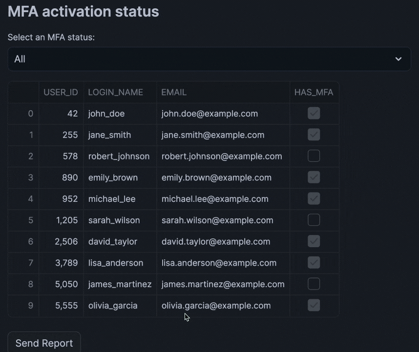
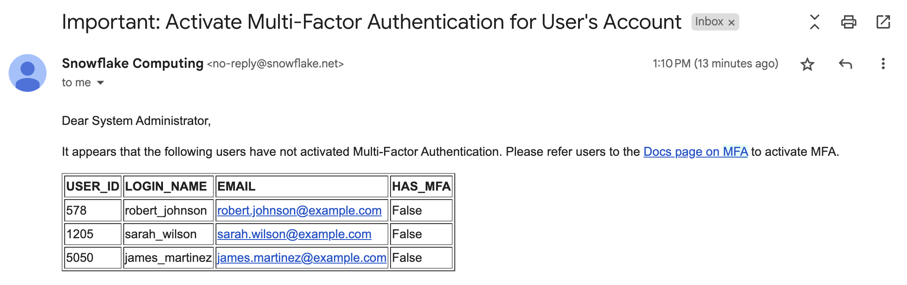

Learn how to create an interactive Multi-Factor Authentication (MFA) audit system using Streamlit in Snowflake Notebooks. This application helps security administrators monitor user MFA compliance and automatically notify relevant stakeholders about users who haven't enabled MFA.
What You'll Learn
- How to create and query a user dataset containing MFA status
- How to set up email notifications in Snowflake
- How to build an interactive Streamlit interface for MFA monitoring
- How to implement automated email reporting for non-compliant users
What You'll Build
An interactive Streamlit application that displays user MFA status and sends formatted email reports to system administrators about users who haven't enabled MFA.
What You'll Need
- Access to a Snowflake account
Prerequisites
- Access to Snowflake Notebooks
- System administrator privileges in Snowflake
- Basic understanding of SQL and Python
- Valid email address for receiving notifications
Open Snowflake Notebook
You can retrieve the MFA Audit Snowflake Notebook and follow along with the tutorial.
Creating the User Dataset
In this quickstart, we'll use an artificially generated demo data explained here after.
Approach 1: Creation via SQL Query
The following query sets up the necessary administrative permissions, compute resources, database structures, and data staging areas to load MFA user data from an external S3 bucket.
USE ROLE ACCOUNTADMIN; -- Sets current role to ACCOUNTADMIN
CREATE OR REPLACE WAREHOUSE MFA_DEMO_WH; -- By default, this creates an XS Standard Warehouse
CREATE OR REPLACE DATABASE MFA_DEMO_DB;
CREATE OR REPLACE SCHEMA MFA_DEMO_SCHEMA;
CREATE OR REPLACE STAGE MFA_DEMO_ASSETS; -- Store data files
-- create csv format
CREATE FILE FORMAT IF NOT EXISTS MFA_DEMO_DB.MFA_DEMO_SCHEMA.CSVFORMAT
SKIP_HEADER = 1
TYPE = 'CSV';
-- Create stage and load external demo data from S3
CREATE STAGE IF NOT EXISTS MFA_DEMO_DB.MFA_DEMO_SCHEMA.MFA_DEMO_DATA
FILE_FORMAT = MFA_DEMO_DB.MFA_DEMO_SCHEMA.CSVFORMAT
URL = 's3://sfquickstarts/sfguide_building_mfa_audit_system_with_streamlit_in_snowflake_notebooks/demo_data.csv';
-- https://sfquickstarts.s3.us-west-1.amazonaws.com/sfguide_building_mfa_audit_system_with_streamlit_in_snowflake_notebooks/demo_data.csv
LS @MFA_DEMO_DATA; -- List contents of the stage we just created
Next, we'll copy the staged data from an S3 bucket into a newly created MFA_DATA table.
-- Create a new data table called MFA_DEMO
CREATE OR REPLACE TABLE MFA_DEMO_DB.MFA_DEMO_SCHEMA.MFA_DATA (
USER_ID NUMBER,
NAME VARCHAR(100),
CREATED_ON TIMESTAMP,
DELETED_ON TIMESTAMP,
LOGIN_NAME VARCHAR(100),
DISPLAY_NAME VARCHAR(100),
FIRST_NAME VARCHAR(50),
LAST_NAME VARCHAR(50),
EMAIL VARCHAR(255),
MUST_CHANGE_PASSWORD BOOLEAN,
HAS_PASSWORD BOOLEAN,
COMMENT VARCHAR(255),
DISABLED BOOLEAN,
SNOWFLAKE_LOCK BOOLEAN,
DEFAULT_WAREHOUSE VARCHAR(100),
DEFAULT_NAMESPACE VARCHAR(100),
DEFAULT_ROLE VARCHAR(100),
EXT_AUTHN_DUO BOOLEAN,
EXT_AUTHN_UID VARCHAR(100),
HAS_MFA BOOLEAN,
BYPASS_MFA_UNTIL TIMESTAMP,
LAST_SUCCESS_LOGIN TIMESTAMP,
EXPIRES_AT TIMESTAMP,
LOCKED_UNTIL_TIME TIMESTAMP,
HAS_RSA_PUBLIC_KEY BOOLEAN,
PASSWORD_LAST_SET_TIME TIMESTAMP,
OWNER VARCHAR(100),
DEFAULT_SECONDARY_ROLE VARCHAR(100),
TYPE VARCHAR(50)
);
-- Copy the data from your stage to this newly created table
COPY INTO MFA_DEMO_DB.MFA_DEMO_SCHEMA.MFA_DATA
FROM @MFA_DEMO_DB.MFA_DEMO_SCHEMA.MFA_DEMO_DATA
Approach 2: Creation via GUI
- In Snowflake Notebook, click on
+→Table→From Filein the left sidebar menu (see screenshot below) - Create a table called
CHANINN_DEMO_DATA.PUBLIC.MFA_DATA. Particularly, you'll see a pop-up, go ahead and select a warehouse, upload the CSV file, specify the database (CHANINN_DEMO_DATA), schema (PUBLIC) and table name (MFA_DATA). - Upload the demo data file

Setting up Email Notifications
Create a notification integration for email communications by entering the following into a SQL cell:
CREATE OR REPLACE NOTIFICATION INTEGRATION my_email_int
TYPE=EMAIL
ENABLED=TRUE;
Running this query should return the following confirmation: 
Writing the Query
Next, we'll retrieve a subset of columns to display (e.g. USER_ID, LOGIN_NAME, EMAIL and HAS_MFA). Note that we'll filter this by the user MFA status:
SELECT USER_ID, LOGIN_NAME, EMAIL, HAS_MFA
FROM CHANINN_DEMO_DATA.PUBLIC.MFA_DATA
WHERE HAS_MFA = 'FALSE'
Testing Email Notifications
Verify the email integration works:
CALL SYSTEM$SEND_EMAIL(
'my_email_int',
'your-name@email-address.com',
'Email subject goes here',
'Hello world! This is a test message!'
);
Running the above SQL query will return the following confirmation output:

The notification email looks as follows:

Creating the Interactive Dashboard
Build the Streamlit application with filtering capabilities and email notifications.
Before running the code, please replace your-name@email-address.com with the email address tied to your user account.
from snowflake.snowpark.context import get_active_session
import streamlit as st
session = get_active_session()
# DataFrame of users and their MFA status
st.header('MFA activation status')
mfa_selection = st.selectbox('Select an MFA status:', ('All', 'MFA Activated', 'MFA Not Activated'))
if mfa_selection == 'All':
df = session.sql(
"""SELECT USER_ID, LOGIN_NAME, EMAIL, HAS_MFA
FROM CHANINN_DEMO_DATA.PUBLIC.MFA_DATA"""
).to_pandas()
paragraph = "<p>Here's the Multi-Factor Authentication status of all users. Please refer users to the <a href='https://docs.snowflake.com/en/user-guide/security-mfa'>Docs page on MFA</a> to activate MFA.</p>"
if mfa_selection == 'MFA Activated':
df = session.sql(
"SELECT USER_ID, LOGIN_NAME, EMAIL, HAS_MFA FROM CHANINN_DEMO_DATA.PUBLIC.MFA_DATA WHERE HAS_MFA = 'TRUE'"
).to_pandas()
paragraph = "<p>Congratulations, these users have activated their Multi-Factor Authentication!</p>"
if mfa_selection == 'MFA Not Activated':
df = session.sql(
"SELECT USER_ID, LOGIN_NAME, EMAIL, HAS_MFA FROM CHANINN_DEMO_DATA.PUBLIC.MFA_DATA WHERE HAS_MFA = 'FALSE'"
).to_pandas()
paragraph = "<p>It appears that the following users have not activated Multi-Factor Authentication. Please refer users to the <a href='https://docs.snowflake.com/en/user-guide/security-mfa'>Docs page on MFA</a> to activate MFA.</p>"
st.dataframe(df)
# Send Email
if st.button('Send Report'):
email= 'your-name@email-address.com'
email_subject = "Important: Activate Multi-Factor Authentication for User's Account"
header = '<p>Dear System Administrator,</p>'
body = header + '\n' + paragraph + '\n' + df.to_html(index=False, justify='left')
session.call('SYSTEM$SEND_EMAIL',
'my_email_int',
email,
email_subject,
body,
'text/html')
st.success('Report sent!', icon='✅')
Once we run the code cell, make a selection on the select box drop-down widget section and click on Send Report, which if successful should return the Report sent! confirmation message:

Here's how the MFA report that has been delivered to your email inbox looks like:

Congratulations! You've successfully built an MFA audit system that helps monitor and manage user security compliance through an interactive Streamlit interface with automated email notifications.
What You Learned
- How to create and query user security data in Snowflake
- How to set up and use email notifications
- How to build an interactive dashboard with Streamlit
- How to automate security compliance reporting with Streamlit
Related Resources
Articles:
Documentation:
Happy coding!